(opens the picture full size in a new tab)
(opens the picture full size in a new tab)In this practice, you'll work with PDFs instead of plain text and apply:
Note: All the code discussed in this section is available in the Colab file:
You'll run every step on the supplier file, the same 3-page file you used in Project 3, so you see what each tool does with supplier documents.
This notebook builds on our previous exploration of embeddings and chunking to demonstrate advanced retrieval techniques using PDF documents. We'll explore query expansion, hybrid retrieval, and reranking to optimize the quality of search results.
Why are we switching to PDFs?
What to observe: Unlike text files, PDFs require parsing before indexing. (Parsing means reading the file's layout to pull out its text.)
You already know PyMuPDF from Project 3, where you used it to pull the words out of this same file.
Press Run on the STEP 0 cell (its heading says # STEP 0).
Installation
# ============================================# STEP 0: Install Required Libraries# ============================================## WHAT WE'RE DOING:# Installing libraries for PDF processing, AI queries, and embeddings.## WHY THIS MATTERS:# PyMuPDF reads PDFs, LlamaIndex manages the RAG pipeline, Gemini provides AI responses.## WHAT YOU'LL SEE:# Download progress bars. This may take a few minutes.## TROUBLESHOOTING: If you see errors, try running this cell again.# ============================================# Install required libraries!pip install -q llama-index==0.14.25 llama-index-llms-google-genai==0.11.3 pymupdf!pip install -q llama-index-embeddings-huggingface==0.8.0!pip install -q nest_asyncio!pip install -q llama-index-retrievers-bm25==0.8.0!pip install -q sentence-transformersWhat this code does:
llama-index-retrievers-bm25 is the keyword search you'll use from STEP 15, and sentence-transformers runs the reranker in STEP 19.==0.14.25 and the other numbers pick exact versions, the ones this notebook was tested with.What you'll see in Colab:
(opens the picture full size in a new tab)In the run shown here, the cell printed one yellow line: WARNING: huggingface-hub 1.33.0 does not provide the extra 'inference'. It's only a warning, so keep going.
Seeing red "ERROR: pip's dependency resolver…" lines? If they mention google-adk, opentelemetry or jedi, you can ignore them. Those are tools Colab preinstalls that this notebook doesn't use. Keep going. If a later cell fails with an ImportError, choose Runtime → Restart session, then run all cells again.
Press Run on the STEP 1 cell (its heading says # STEP 1).
Setting up the environment
# ============================================# STEP 1: Set Up Environment and API Key# ============================================## WHAT WE'RE DOING:# Loading our tools and setting the API key for Google's Gemini AI.## WHY THIS MATTERS:# The API key lets our code communicate with Gemini to generate responses.## WHAT YOU'LL SEE:# No output — everything is set up silently.## TROUBLESHOOTING:# - Get your free API key at: https://aistudio.google.com/app/apikey# - If you see "API key not valid" later, double-check your key# ============================================import osimport fitz # PyMuPDFimport pandas as pdimport matplotlib.pyplot as pltfrom IPython.display import Markdown, displayimport nest_asyncioAnd here's the end of the same cell:
nest_asyncio.apply()# Set up Google API key for Geminifrom google.colab import userdata# Reads your key from Colab Secrets (the key icon in the left sidebar).# Never paste your key into a code cell.os.environ["GOOGLE_API_KEY"] = userdata.get('GEMINI_API_KEY')# Create a directory for our PDFs if it doesn't exist!mkdir -p sample_docsWhat this code does:
import fitz loads PyMuPDF. fitz is its old name.pandas and matplotlib draw the table and the chart in STEP 18.GEMINI_API_KEY in Colab Secrets in the first reading of this project, so this cell finds it there.If Notebook access is off for this copy, Colab first asks whether your notebook may read the secret GEMINI_API_KEY:
Click Grant access. (If you click Cancel, the cell stops with NotebookAccessError.)
What you'll see in Colab:
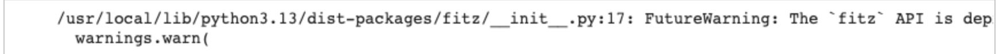
(opens the picture full size in a new tab)You'll see a FutureWarning: "The fitz API is deprecated". It's only a warning. fitz is PyMuPDF's old name and still works here, so keep going.
It prints only the first time you run this cell in a session, so a second run shows nothing.
os.environ["GOOGLE_API_KEY"] now holds: your key, ready for Gemini in STEP 8.
Press Run on the STEP 2 cell (its heading says # STEP 2).
Loading and Exploring PDF Documents
First, let's see how to load and extract text from a PDF using PyMuPDF.
This cell makes the upload button. The text itself is pulled out in STEP 4 and STEP 5.
# ============================================# STEP 2: Define PDF Upload Function# ============================================## WHAT WE'RE DOING:# Creating a helper function that lets you upload a PDF file.## WHY THIS MATTERS:# We need a real PDF document to test our retrieval system on.## WHAT YOU'LL SEE:# No output yet — this just defines the function.# ============================================from google.colab import filesimport osAnd here's the end of the same cell:
def upload_pdf(): """Upload a PDF file and return its path.""" print("Please select a PDF file to upload:") uploaded = files.upload() for filename in uploaded.keys(): if filename.endswith('.pdf'): # Save to the sample_docs directory pdf_path = os.path.join("sample_docs", filename) # Create directory if it doesn't exist os.makedirs("sample_docs", exist_ok=True) # Save the file with open(pdf_path, 'wb') as f: f.write(uploaded[filename]) print(f"PDF saved to {pdf_path}") return pdf_path else: print(f"File {filename} is not a PDF. Please upload a PDF file.") return NoneWhat this code does:
def upload_pdf(): defines a function (a named block of code you can run later). Nothing runs yet.files.upload() shows a Choose files button. A PDF is saved in the sample_docs folder and its path comes back. Any other file gets "is not a PDF".Upload the supplier file you downloaded on slide 1; that's the file the note below calls sample-sdf-document.pdf.
Here you should upload a digital PDF (PDF where you can select some text). If you don't have a PDF, you can use the sample-sdf-document.pdf included in this project folder (originally from Project 3). Upload it when prompted below.
Press Run on the STEP 3 cell (its heading says # STEP 3).
# ============================================# STEP 3: Upload Your PDF# ============================================## WHAT WE'RE DOING:# Running the upload function — a file picker will appear.# Upload the sample-sdf-document.pdf file from this project folder.## WHAT YOU'LL SEE:# A file upload button. Select your PDF and wait for the confirmation message.# ============================================# Uncomment to upload your own PDFpdf_path = upload_pdf()The line under # Uncomment to upload your own PDF already runs, so you don't need to change anything.
What you'll see in Colab:
Click Choose files and pick the supplier file you downloaded.
What you'll see in Colab:
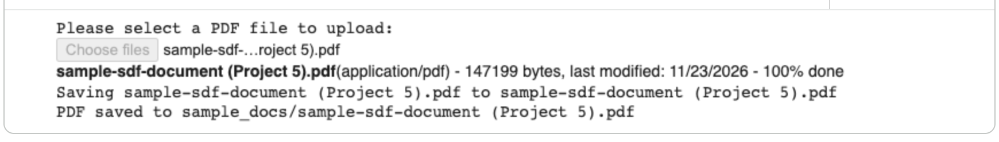
(opens the picture full size in a new tab)The file's name may differ if your download has another name. That's fine.
pdf_path now holds: where your PDF is saved, such as sample_docs/sample-sdf-document (Project 5).pdf.
The next cell starts with # Uncomment if you would like to add your own path. Every line in it starts with #, so it does nothing. You can leave it.
# Uncomment if you would like to add your own path# pdf_path = "/content/sample_docs/sample-sdf-document.pdf"Press Run on the STEP 4 cell (its heading says # STEP 4).
# ============================================# STEP 4: Define Text Extraction Function# ============================================## WHAT WE'RE DOING:# Creating a function to extract text from PDF pages using PyMuPDF.## WHY THIS MATTERS:# Before AI can search a PDF, we need to convert it from a visual format to text.## WHAT YOU'LL SEE:# No output yet — we're just defining the function.# ============================================def extract_text_from_pdf(pdf_path): """Extract text from a PDF file using PyMuPDF.""" doc = fitz.open(pdf_path) # Extract text from all pages text = "\n".join([page.get_text() for page in doc]) # Print some stats print(f"PDF: {pdf_path}") print(f"Number of pages: {len(doc)}") print(f"Extracted {len(text.split())} words from the PDF.") # Close the document doc.close() return textWhat this code does: page.get_text() reads the words on each page, and "\n".join(...) puts all the pages into one long text.
Press Run on the STEP 5 cell (its heading says # STEP 5).
# ============================================# STEP 5: Extract Text from Your PDF# ============================================## WHAT WE'RE DOING:# Extracting text from your uploaded PDF and showing a preview.## WHAT YOU'LL SEE:# Page count, word count, and the first 500 characters of text.# ============================================# Example usage (after uploading a PDF):if pdf_path: text = extract_text_from_pdf(pdf_path) print(text[:500]) # Print first 500 charactersWhat you'll see in Colab:
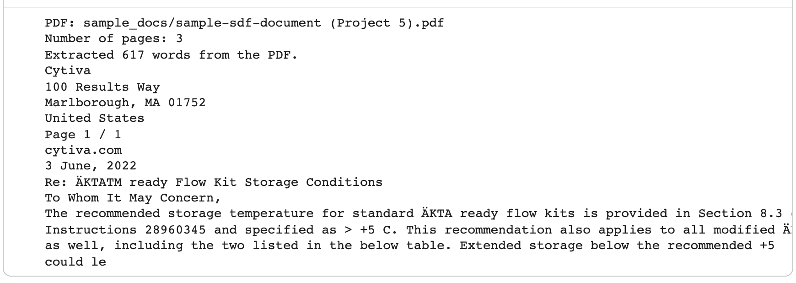
(opens the picture full size in a new tab)The supplier file has 3 pages and 617 words. The preview stops after 500 characters, in the middle of a word.
text now holds: the words of all 3 pages, as one long text.
Press Run on the STEP 6 cell (its heading says # STEP 6).
Integrating PyMuPDF with LlamaIndex
Now let's set up a custom loader to integrate PyMuPDF with LlamaIndex:
# ============================================# STEP 6: Define LlamaIndex Document Loader# ============================================## WHAT WE'RE DOING:# Creating a function that converts PDF pages into LlamaIndex Document objects.## WHY THIS MATTERS:# LlamaIndex needs documents in a specific format to index and search them.## WHAT YOU'LL SEE:# No output yet — we're just defining the function.# ============================================from llama_index.core import Documentfrom typing import Listdef load_pdf_with_pymupdf(pdf_path: str) -> List[Document]: """Load a PDF and convert it to LlamaIndex Document format using PyMuPDF.""" # Open the PDF doc = fitz.open(pdf_path) # Extract text from each page documents = [] for i, page in enumerate(doc): text = page.get_text() # Skip empty pages if not text.strip(): continueAnd here's the end of the same cell:
# Create Document object with metadata documents.append( Document( text=text, metadata={ "file_name": os.path.basename(pdf_path), "page_number": i + 1, "total_pages": len(doc) } ) ) # Close the document doc.close() # Print stats print(f"Processed {pdf_path}:") print(f"Extracted {len(documents)} pages with content") return documentsWhat this code does:
Document for each page and skips empty pages.metadata means extra labels kept with the text. Here they are the file name, the page number and the number of pages.Press Run on the STEP 7 cell (its heading says # STEP 7).
# ============================================# STEP 7: Load PDF into LlamaIndex Format# ============================================## WHAT WE'RE DOING:# Loading the PDF into LlamaIndex format.## WHAT YOU'LL SEE:# How many pages with content were extracted.# ============================================# Example usage:pdf_docs = load_pdf_with_pymupdf(pdf_path)What you'll see in Colab:
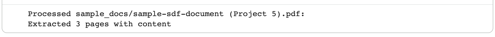
(opens the picture full size in a new tab)pdf_docs now holds: 3 LlamaIndex documents, one for each page of the supplier file.
Press Run on the STEP 8 cell (its heading says # STEP 8).
Indexing and Processing PDFs
Let's create the indexing infrastructure first:
# ============================================# STEP 8: Set Up AI Models and Indexing Function# ============================================## WHAT WE'RE DOING:# Setting up the AI models and creating a searchable index from our PDF.## WHY THIS MATTERS:# The index is like a smart table of contents that lets AI find relevant sections instantly.## WHAT YOU'LL SEE:# Confirmation that Gemini and the embedding model are ready.# ============================================from llama_index.llms.google_genai import GoogleGenAIfrom llama_index.core import Settingsfrom llama_index.core import VectorStoreIndexfrom llama_index.embeddings.huggingface import HuggingFaceEmbeddingAnd here's the end of the same cell:
# Initialize Gemini LLMllm = GoogleGenAI(model="gemini-3.5-flash-lite")Settings.llm = llm# Initialize embedding modelembed_model = HuggingFaceEmbedding(model_name="sentence-transformers/all-MiniLM-L6-v2")Settings.embed_model = embed_modeldef process_and_index_pdf(pdf_path): """Process a PDF and create both vector and keyword indices.""" # Load documents documents = load_pdf_with_pymupdf(pdf_path) # Create vector index vector_index = VectorStoreIndex.from_documents(documents) print(f"Indexed {len(documents)} document chunks") return vector_indexWhat this code does:
gemini-3.5-flash-lite) and the embedding model all-MiniLM-L6-v2 from earlier in this project.process_and_index_pdf loads the PDF with STEP 6 and builds the index. It runs in STEP 9.What you'll see in Colab:
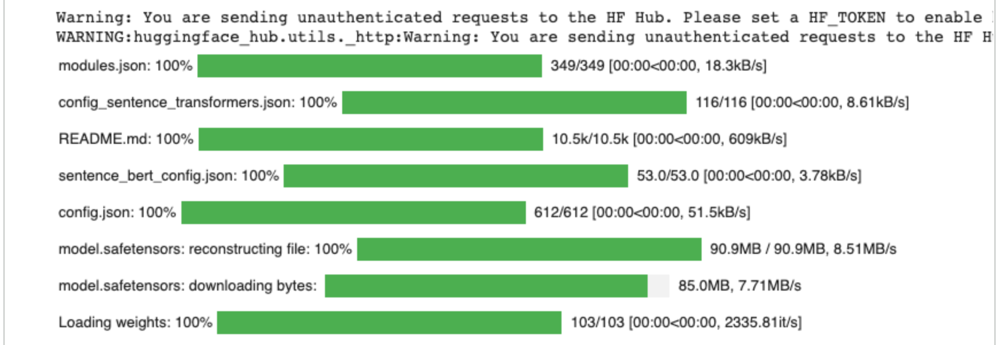
(opens the picture full size in a new tab)The warning about HF_TOKEN is safe to ignore. Hugging Face is the website the embedding model downloads from, and it works without a token, just a little slower.
The bars show the model's files downloading. Wait for the green tick.
Press Run on the STEP 9 cell (its heading says # STEP 9).
# ============================================# STEP 9: Index the PDF# ============================================## WHAT WE'RE DOING:# Indexing the PDF — this converts it into searchable vector embeddings.## WHAT YOU'LL SEE:# Confirmation showing how many document chunks were indexed.# ============================================index = process_and_index_pdf(pdf_path)What you'll see in Colab:
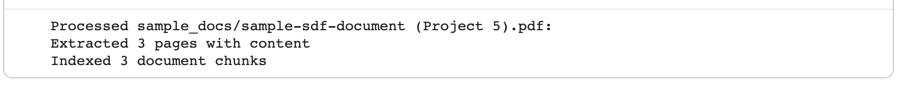
(opens the picture full size in a new tab)Where would your chunking choice from the last reading go? Into STEP 8, at VectorStoreIndex.from_documents(documents) inside process_and_index_pdf. This notebook passes no chunking setting there, so LlamaIndex splits with its default size (1,024 tokens, where a token is a word or part of a word). Each page of the supplier file is shorter than that, so each page stays one chunk: 3 pages, 3 chunks.
index now holds: the searchable index of the supplier file.
Press Run on the STEP 10 cell (its heading says # STEP 10).
Implement Query Expansion & Rewriting
Query expansion helps improve retrieval by adding relevant terms to the original query.
What is Query Expansion? When users phrase queries differently from how the document is written, retrieval may fail. We'll use Gemini to rewrite queries for better document matching!
# ============================================# STEP 10: Define Query Expansion Function# ============================================## WHAT WE'RE DOING:# Creating a function that rewrites queries to improve search results.## WHY THIS MATTERS:# Users often phrase questions differently from how documents are written.# Query expansion adds related terms so the search finds more relevant results.## WHAT YOU'LL SEE:# No output yet — we're defining the function.# ============================================# Gemini was already configured in STEP 8 above# Simple query expansion function using GeminiAnd here's the end of the same cell:
def expand_query(query: str, num_expansions: int = 3) -> list: """Expand a query to include related terms using Gemini.""" prompt = f""" I need to search a pharmaceutical quality document with this query: "{query}" Please help me expand this query by generating {num_expansions} alternative versions that: 1. Use different but related terminology 2. Include relevant pharmaceutical/quality terms that might appear in a certificate or SDF 3. Cover similar concepts but phrased differently Format your response as a list of alternative queries only, with no additional text. """ response = llm.complete(prompt) # Extract the expanded queries expanded_queries = [line.strip() for line in response.text.split('\n') if line.strip()] # Add the original query if needed if query not in expanded_queries: expanded_queries = [query] + expanded_queries return expanded_queriesWhat this code does:
llm.complete(prompt) sends the prompt to Gemini and asks for 3 other ways to ask your question.Press Run on the STEP 11 cell (its heading says # STEP 11).
# ============================================# STEP 11: Test Query Expansion# ============================================## WHAT WE'RE DOING:# Testing query expansion with a sample pharmaceutical question.## WHAT YOU'LL SEE:# The original query plus expanded versions with related terms.# ============================================# Example usage:expanded = expand_query("What test methods were used for quality control?")for i, q in enumerate(expanded): print(f"{i+1}. {q}")What you'll see in Colab:
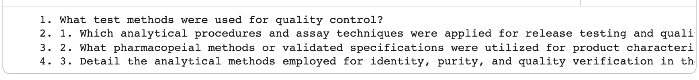
(opens the picture full size in a new tab)What to observe: AI adds relevant terms to improve search accuracy.
In the run shown here, Gemini wrote 3 new ways to ask, with words like "release testing" and "lot release". Yours will be worded differently, because Gemini writes them fresh each time.
Press Run on the STEP 12 cell (its heading says # STEP 12).
Creating a Query Expansion Engine
Now let's implement a more structured query expansion using LlamaIndex's built-in functionality:
# ============================================# STEP 12: Build Query Expansion Engine# ============================================## WHAT WE'RE DOING:# Building a more advanced query engine that automatically expands queries.## WHY THIS MATTERS:# QueryFusionRetriever generates multiple versions of your question and combines results.## WHAT YOU'LL SEE:# No output — the engine is ready to use.# ============================================from llama_index.core.query_engine import RetrieverQueryEnginefrom llama_index.core.retrievers import QueryFusionRetrieverAnd here's the end of the same cell:
# Function to create a query engine that uses query expansiondef create_query_expansion_engine(index): """Create a query engine that uses query expansion.""" # First create multiple retrievers (base retriever) base_retriever = index.as_retriever(similarity_top_k=2) # Create a query fusion retriever fusion_retriever = QueryFusionRetriever( retrievers=[base_retriever], llm=llm, similarity_top_k=2, num_queries=3, # Generate 3 queries per original query mode="reciprocal_rerank" # Use reciprocal rank fusion ) # Create the query engine with the fusion retriever query_engine = RetrieverQueryEngine.from_args( retriever=fusion_retriever, llm=llm, verbose=True ) return query_engineWhat this code does:
num_queries=3 means 3 questions in all: yours, plus 2 that Gemini writes.reciprocal_rerank is reciprocal rank fusion: a way to merge lists that gives each result points for ranking high in any of them. similarity_top_k=2 keeps the 2 best chunks.Press Run on the STEP 13 cell (its heading says # STEP 13).
# ============================================# STEP 13: Test the Query Expansion Engine# ============================================## WHAT WE'RE DOING:# Testing the query expansion engine with a real question.## WHAT YOU'LL SEE:# An AI-generated answer based on the PDF content.# ============================================# Example usage:expanded_query_engine = create_query_expansion_engine(index)response = expanded_query_engine.query("What test methods were used for quality control?")print(response)What this code does:
What you'll see in Colab:
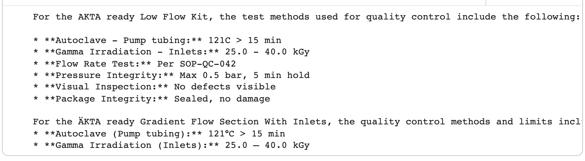
(opens the picture full size in a new tab)In the run shown here, Gemini answered with a bulleted list. Gemini writes each answer fresh, so yours may be worded differently.
Press Run on the STEP 14 cell (its heading says # STEP 14).
# ============================================# STEP 14: Note about BM25# ============================================## The BM25 library (llama-index-retrievers-bm25) was already installed# in STEP 0 at the top of this notebook. No additional installation needed.## BM25 is a keyword-based search algorithm — we'll combine it with# vector search in the next section.# ============================================print("BM25 library was already installed in Step 0 — ready to use!")What you'll see in Colab:
BM25 is the keyword search from the Learn cards. This cell only prints a note, because STEP 0 already installed it.
Press Run on the STEP 15 cell (its heading says # STEP 15).
Implement Hybrid Retrieval (Keyword + Vector Search)
Hybrid retrieval combines embedding-based semantic search with keyword-based retrieval for better results.
Why Hybrid Retrieval?
# ============================================# STEP 15: Build Hybrid Retriever# ============================================## WHAT WE'RE DOING:# Building a hybrid retriever that combines vector search (meaning) + keyword search (exact matches).## WHY THIS MATTERS:# Neither method alone is perfect — combining them gives the best of both worlds.## WHAT YOU'LL SEE:# No output — the function is ready to use.# ============================================from llama_index.core import VectorStoreIndexfrom llama_index.retrievers.bm25 import BM25Retrieverdef create_hybrid_retriever(index, query, top_k=2): """Create a hybrid retrieval approach combining vector and keyword search."""Here's the middle of the same cell:
# Method 1: Vector retrieval (semantic search) vector_retriever = index.as_retriever(similarity_top_k=top_k) vector_nodes = vector_retriever.retrieve(query) # Method 2: BM25 retrieval (keyword-based search) # Get all nodes from the index nodes = [node for node in index.docstore.docs.values()] bm25_retriever = BM25Retriever.from_defaults( nodes=nodes, similarity_top_k=top_k ) keyword_nodes = bm25_retriever.retrieve(query) # Combine results (simple approach) all_nodes = [] all_nodes.extend(vector_nodes) all_nodes.extend(keyword_nodes)What this code does:
top_k), and both lists go into one list.And here's the end of the same cell:
# Remove duplicates unique_nodes = [] seen_ids = set() for node in all_nodes: if node.node_id not in seen_ids: unique_nodes.append(node) seen_ids.add(node.node_id) # Sort by score (higher is better) sorted_nodes = sorted(unique_nodes, key=lambda x: x.score if hasattr(x, 'score') else 0.0, reverse=True) # Limit to top results top_nodes = sorted_nodes[:top_k] return top_nodesWhat this code does:
Press Run on the STEP 16 cell (its heading says # STEP 16).
# ============================================# STEP 16: Test Hybrid Retrieval# ============================================## WHAT WE'RE DOING:# Testing hybrid retrieval with a pharmaceutical question.## WHAT YOU'LL SEE:# Retrieved text passages from the PDF, ranked by relevance score.# ============================================# Example usage:hybrid_nodes = create_hybrid_retriever(index, "What are the storage conditions for this product?")for i, node in enumerate(hybrid_nodes): print(f"Result {i+1} (Score: {node.score:.4f}):") print(node.get_text()) print("-" * 40)What this code does:
What you'll see in Colab:
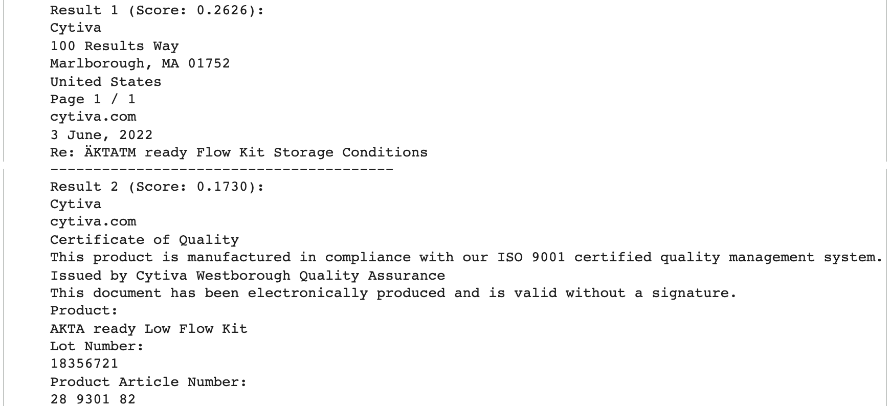
(opens the picture full size in a new tab)Result 1 is page 1, the letter (score 0.2626), and Result 2 is the certificate on page 3 (score 0.1730). Each result prints a whole page, because each page is one chunk. A line DEBUG:bm25s:Building index from IDs objects may appear above: it's only a progress note.
Press Run on the STEP 17 cell (its heading says # STEP 17).
Comparing Retrieval Methods
Let's create a function to compare different retrieval methods:
# ============================================# STEP 17: Define Retrieval Comparison Function# ============================================## WHAT WE'RE DOING:# Creating a comparison function to see how different retrieval methods perform.## WHY THIS MATTERS:# Seeing results side-by-side helps you understand why hybrid search is powerful.## WHAT YOU'LL SEE:# No output — the function is defined and ready.# ============================================def compare_retrieval_methods(index, query, top_k=2): """Compare different retrieval methods for the same query.""" # Vector retrieval vector_retriever = index.as_retriever(similarity_top_k=top_k) vector_nodes = vector_retriever.retrieve(query)Here's the middle of the same cell:
# Keyword retrieval (BM25) nodes = [node for node in index.docstore.docs.values()] keyword_retriever = BM25Retriever.from_defaults( nodes=nodes, similarity_top_k=top_k ) keyword_nodes = keyword_retriever.retrieve(query) # Hybrid retrieval hybrid_nodes = create_hybrid_retriever(index, query, top_k) # Create a comparison dataframe results = [] for method, nodes in [ ("Vector (Semantic)", vector_nodes), ("Keyword (BM25)", keyword_nodes), ("Hybrid", hybrid_nodes) ]: for i, node in enumerate(nodes): results.append({ "Method": method, "Rank": i + 1, "Score": node.score if hasattr(node, 'score') else 0.0, "Content": node.get_text()[:200] + "...", # First 200 chars "Page": node.metadata.get("page_number", "Unknown") if hasattr(node, 'metadata') else "Unknown" }) results_df = pd.DataFrame(results) display(results_df)And here's the end of the same cell:
# Visualize scores plt.figure(figsize=(10, 6)) for method in ["Vector (Semantic)", "Keyword (BM25)", "Hybrid"]: method_df = results_df[results_df["Method"] == method] plt.bar( [f"{method} - Rank {row['Rank']}" for _, row in method_df.iterrows()], method_df["Score"], alpha=0.7, label=method ) plt.xlabel("Result") plt.ylabel("Retrieval Score") plt.title(f"Comparison of Retrieval Methods for Query: '{query}'") plt.xticks(rotation=45) plt.legend() plt.tight_layout() plt.show() return results_dfWhat this code does:
pd.DataFrame makes a table with one row for each result, and plt.bar draws a bar for each score.Press Run on the STEP 18 cell (its heading says # STEP 18).
# ============================================# STEP 18: Run Retrieval Comparison# ============================================## WHAT WE'RE DOING:# Comparing vector, keyword, and hybrid retrieval for the same query.## WHAT YOU'LL SEE:# A table and bar chart comparing scores across all three methods.# ============================================# Example usage:comparison = compare_retrieval_methods(index, "What are the storage conditions for this product?")What you'll see in Colab:
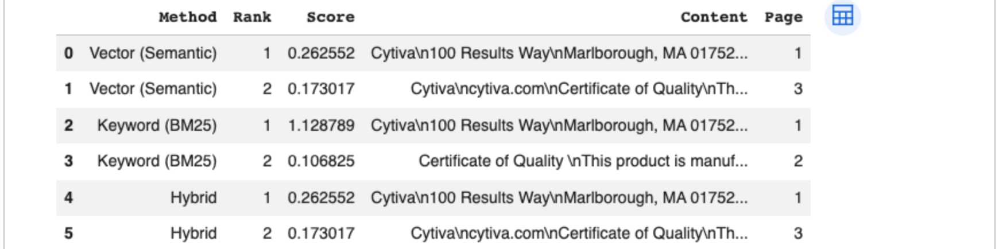
(opens the picture full size in a new tab)Vector search picked pages 1 and 3 (scores 0.2626 and 0.1730). Keyword search picked pages 1 and 2 (scores 1.1288 and 0.1068). Hybrid picked pages 1 and 3.
What you'll see in Colab:
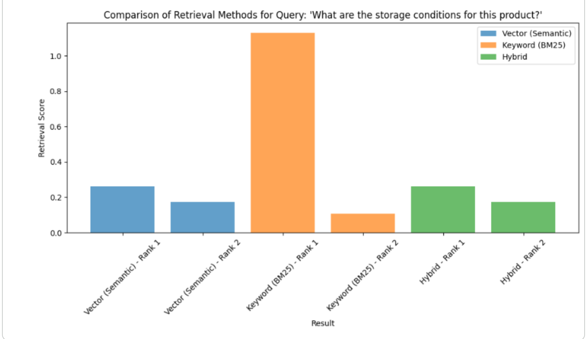
(opens the picture full size in a new tab)What to observe:
Press Run on the STEP 19 cell (its heading says # STEP 19).
Implement Reranking for More Accurate Results
Reranking helps prioritize the most relevant results after initial retrieval.
Why is Reranking Needed? Even after retrieval, some results are more relevant than others. Reranking:
# ============================================# STEP 19: Demonstrate Reranking# ============================================## WHAT WE'RE DOING:# Using a reranker to re-sort retrieved results by true relevance.## WHY THIS MATTERS:# Initial retrieval may rank results poorly — reranking fixes the order.## WHAT YOU'LL SEE:# Before and after comparison showing how reranking changes result ordering.# ============================================from llama_index.core.postprocessor import SentenceTransformerRerankfrom llama_index.core.schema import NodeWithScoreHere's the next part of the same cell:
# Create a rerankerdef rerank_results(nodes, query, top_n=2): """Rerank retrieved nodes using the Sentence Transformer reranker.""" # Create the reranker reranker = SentenceTransformerRerank( model="cross-encoder/ms-marco-MiniLM-L-6-v2", top_n=top_n ) # Rerank the nodes reranked_nodes = reranker.postprocess_nodes( nodes, query_str=query ) return reranked_nodesWhat this code does:
top_n=2 keeps only the 2 best chunks after reranking.Here's the next part of the same cell:
# Function to demonstrate the reranking processdef demonstrate_reranking(index, query, top_k=3): """Demonstrate the reranking process on retrieval results.""" # First retrieve more nodes than we need retriever = index.as_retriever(similarity_top_k=top_k) nodes = retriever.retrieve(query) print(f"Query: {query}") print("\nOriginal Retrieval Order:") for i, node in enumerate(nodes): print(f"{i+1}. (Score: {node.score:.4f}) - {node.get_text()[:100]}...") # Now rerank them reranked_nodes = rerank_results(nodes, query, top_n=2) print("\nAfter Reranking:") for i, node in enumerate(reranked_nodes): print(f"{i+1}. (Score: {node.score:.4f}) - {node.get_text()[:100]}...")What this code does:
top_k=3) and prints them with their scores.rerank_results and prints the 2 it kept.And here's the end of the same cell:
# Create comparison dataframe results = [] # Original ranking for i, node in enumerate(nodes): results.append({ "Stage": "Original Retrieval", "Rank": i + 1, "Score": node.score, "Content": node.get_text()[:150] + "...", "Page": node.metadata.get("page_number", "Unknown") }) # Reranked for i, node in enumerate(reranked_nodes): results.append({ "Stage": "After Reranking", "Rank": i + 1, "Score": node.score, "Content": node.get_text()[:150] + "...", "Page": node.metadata.get("page_number", "Unknown") }) results_df = pd.DataFrame(results) display(results_df) return results_df# Example usage:reranking_demo = demonstrate_reranking(index, "What sterilization method was used?", top_k=3)What this code does:
What you'll see in Colab:
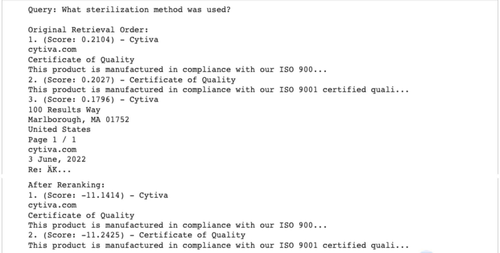
(opens the picture full size in a new tab)Before reranking: pages 3, 2 and 1 (scores 0.2104, 0.2027 and 0.1796). After: pages 3 and 2, in the same order. The reranker kept only the top 2 (top_n=2), so it dropped page 1, the letter, which says nothing about sterilization.
What you'll see in Colab:
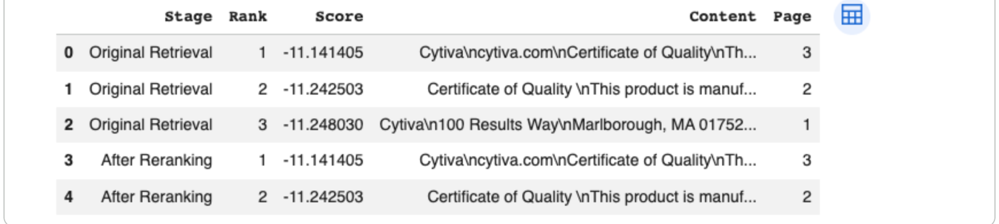
(opens the picture full size in a new tab)In the table, the "Original Retrieval" rows also show the reranker's scores (around -11), not the first scores, because the reranker changed the scores on those same results before the table was made. The first scores are in the list printed above the table (0.2104, 0.2027, 0.1796).
Why negative? A cross-encoder's scores don't run from 0 to 1 like the first scores. They can be below zero, and a higher score still means more relevant, so a score of -5 would be a closer match than -11.
What to observe: Better ranking leads to more accurate responses in document-based AI.
Press Run on the STEP 20 cell (its heading says # STEP 20).
Complete End-to-End Example: Building an Advanced RAG Pipeline
Now let's combine all these techniques into an advanced RAG pipeline:
# ============================================# STEP 20: Build Complete RAG Pipeline# ============================================## WHAT WE'RE DOING:# Building the complete RAG pipeline combining hybrid retrieval + reranking.## WHY THIS MATTERS:# This is the final product — a production-quality document search system.## WHAT YOU'LL SEE:# No output — the pipeline function is defined and ready.# ============================================from llama_index.core.query_engine import RetrieverQueryEnginefrom llama_index.core.postprocessor import SentenceTransformerRerankfrom llama_index.retrievers.bm25 import BM25Retrieverfrom llama_index.core.retrievers import BaseRetrieverfrom llama_index.core.schema import NodeWithScore, QueryBundleHere's the next part of the same cell:
def build_rag_pipeline(index): """Build a simple but effective RAG pipeline with hybrid retrieval and reranking.""" # Get all nodes from the index's docstore nodes = list(index.docstore.docs.values()) # Determine safe top_k value (number of nodes to retrieve) # Must be at least 1 and no more than the number of available nodes num_nodes = len(nodes) safe_top_k = min(2, max(1, num_nodes)) print(f"Index contains {num_nodes} nodes, using top_k={safe_top_k}") # Step 1: Create a hybrid retriever combining vector and keyword search # First, get the vector retriever (for semantic understanding) vector_retriever = index.as_retriever( similarity_top_k=safe_top_k # Retrieve top 2 most similar chunks )What this code does:
safe_top_k is 2, or fewer if the index has fewer chunks.Here's the next part of the same cell:
# Next, create a BM25 retriever (for keyword matching) bm25_retriever = BM25Retriever.from_defaults( nodes=nodes, similarity_top_k=safe_top_k # Retrieve top 2 most similar chunks ) # Create a proper hybrid retriever class class HybridRetriever(BaseRetriever): """Hybrid retriever that combines vector and keyword search results.""" def __init__(self, vector_retriever, keyword_retriever, top_k=2): """Initialize with vector and keyword retrievers.""" self.vector_retriever = vector_retriever self.keyword_retriever = keyword_retriever self.top_k = top_k super().__init__()What this code does:
HybridRetriever, a class (a blueprint for a tool) that holds both retrievers.Here's the next part of the same cell:
def _retrieve(self, query_bundle, **kwargs): """Retrieve from both retrievers and combine results.""" # Get results from both retrievers vector_nodes = self.vector_retriever.retrieve(query_bundle) keyword_nodes = self.keyword_retriever.retrieve(query_bundle) # Combine all nodes all_nodes = list(vector_nodes) + list(keyword_nodes) # Remove duplicates (by node_id) unique_nodes = {} for node in all_nodes: if node.node_id not in unique_nodes: unique_nodes[node.node_id] = node # Sort by score (higher is better) sorted_nodes = sorted( unique_nodes.values(), key=lambda x: x.score if hasattr(x, 'score') else 0.0, reverse=True ) return sorted_nodes[:self.top_k] # Return top resultsWhat this code does:
_retrieve does the same merge as STEP 15, written so LlamaIndex's query engine can use it.And here's the end of the same cell:
# Create our hybrid retriever instance hybrid_retriever = HybridRetriever( vector_retriever=vector_retriever, keyword_retriever=bm25_retriever, top_k=safe_top_k ) # Step 2: Create a reranker to prioritize the most relevant chunks if num_nodes > 1: reranker = SentenceTransformerRerank( model="cross-encoder/ms-marco-MiniLM-L-6-v2", top_n=min(2, num_nodes) # Keep only top 2 results after reranking ) node_postprocessors = [reranker] else: node_postprocessors = [] # Step 3: Build the query engine query_engine = RetrieverQueryEngine.from_args( retriever=hybrid_retriever, llm=llm, node_postprocessors=node_postprocessors ) return query_engineWhat this code does:
RetrieverQueryEngine joins it all: hybrid search, then reranking, then Gemini writes the answer.Press Run on the STEP 21 cell (its heading says # STEP 21).
# ============================================# STEP 21: Run the Complete RAG Pipeline# ============================================## WHAT WE'RE DOING:# Running the complete RAG pipeline on your PDF with a real question.## WHAT YOU'LL SEE:# The AI's answer based on information retrieved from your pharmaceutical document.# ============================================# Example usage:# NOTE: The PDF was already uploaded in Step 3 above. No need to upload again.# If you want to use a different PDF, uncomment the next line:# pdf_path = upload_pdf()index = process_and_index_pdf(pdf_path)rag_engine = build_rag_pipeline(index)response = rag_engine.query("What test methods were used for quality control?")print('\nFinal Response:\n ---------------------- \n')print(response)What this code does:
What you'll see in Colab:
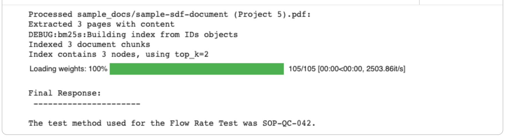
(opens the picture full size in a new tab)In the run shown here, the full pipeline answered in one line, shorter than STEP 13's answer. Gemini writes each answer fresh, so yours may be longer or shorter.
Why are the retrieved pages so alike? On this 3-page file, each page is one chunk, so every method picks from the same 3 pieces. Both STEP 13 and STEP 21 hand Gemini at most 2 pages, so the shorter answer comes from which 2 pages reach Gemini and how Gemini words it. A fuller pipeline doesn't promise a fuller answer. Query expansion, hybrid retrieval and reranking matter on long files with many chunks, where the search has far more pieces to choose from.
Next, scroll down to If You're Stuck if anything went wrong, or to the Challenge.